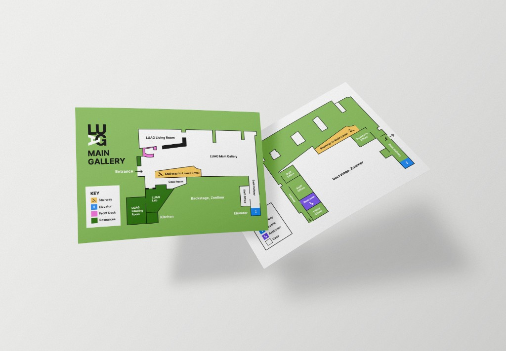

NAVIGATING LUAG (2025)
UX Design | Inclusive Design
Tools: Adobe Illustrator, Figma, Laser Cutter
Team: Dayna Ha, Jua Kim, Ashley Yoon, Dustin Braufman, Hayden Highley

UX Case Study: Our group aimed to create an accessible and inclusive 2D and 3D map for Lehigh University Art Gallery (LUAG) and also signage to indicate the location of the facilities inside LUAG for visually impaired visitors.